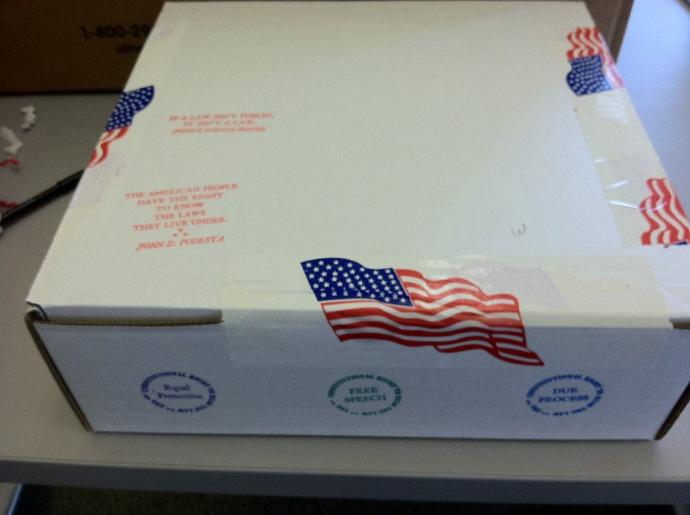
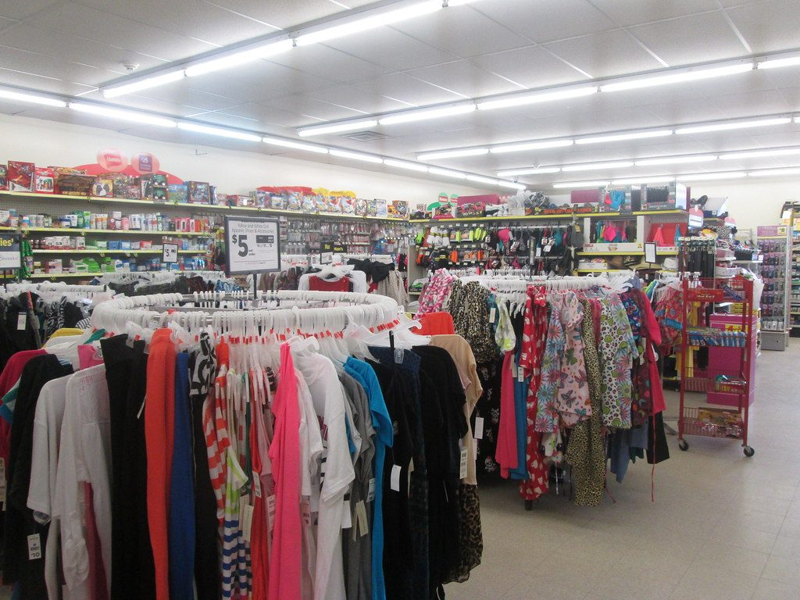
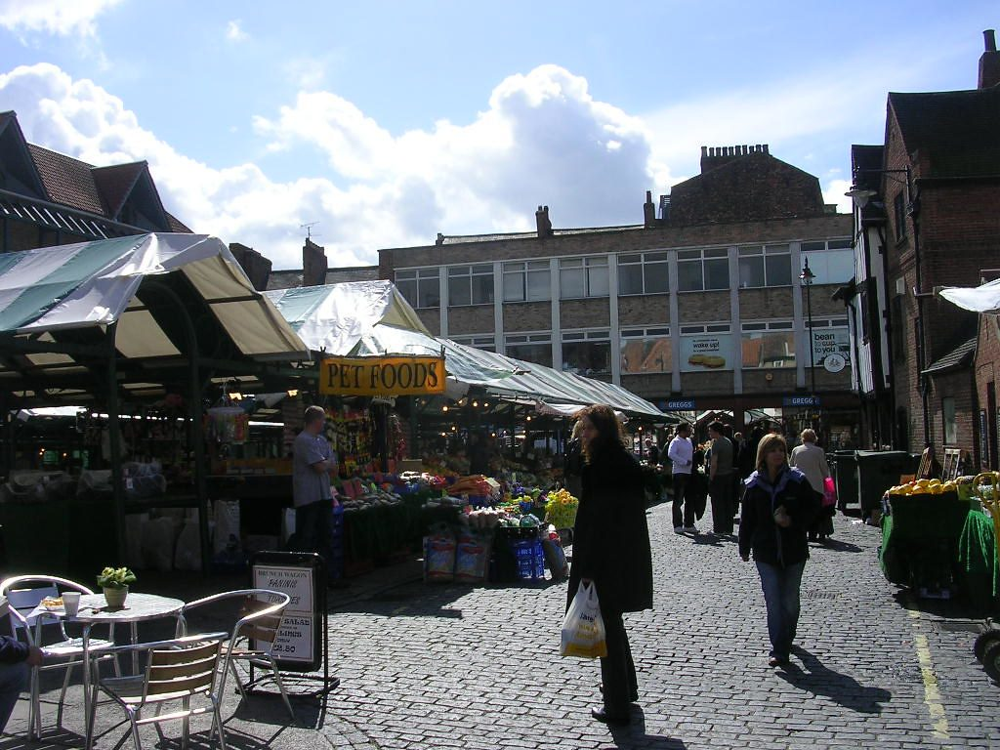
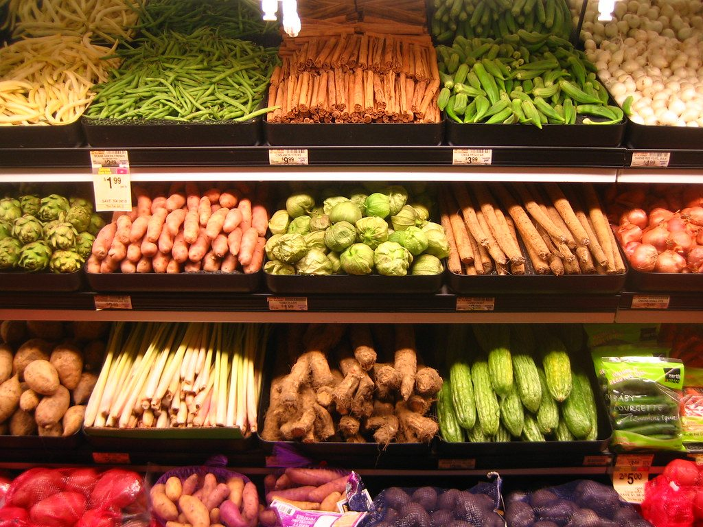
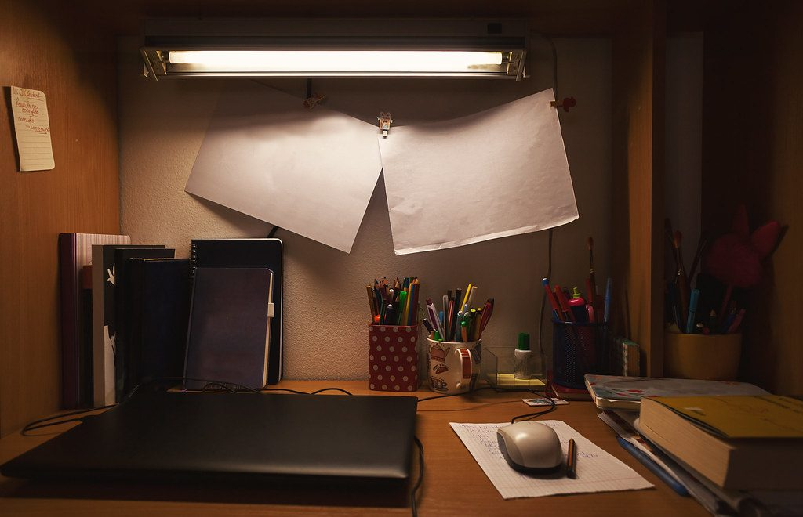
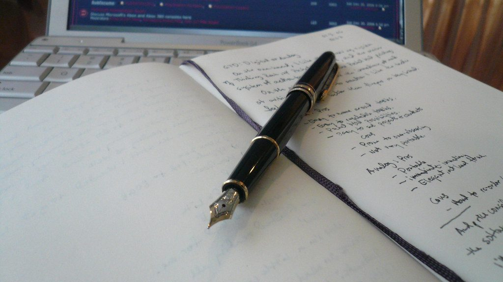
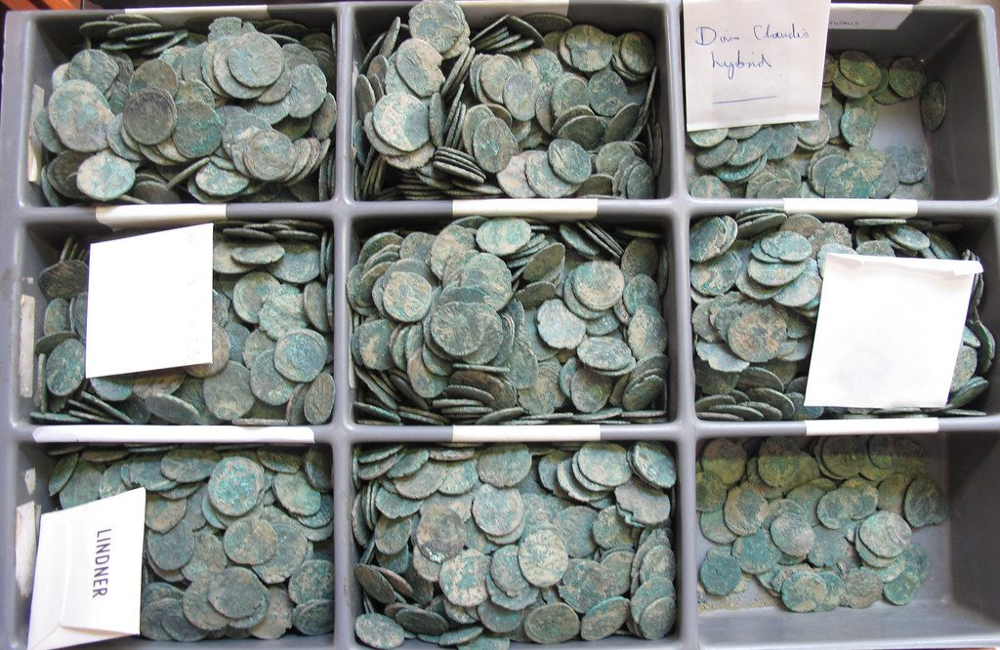

Every image cropped exactly the way a blog hero renders, so this is what actually ships.
Delete anything that does not look right, then remove its entry from manifest.json.
/blog/heroes/hands-keyboard-close.jpg
Close view of hands typing on a keyboard
Unknown / Rawpixel / CC0 1.0
/blog/heroes/hands-keyboard-desk.jpg
Hands typing on a keyboard at a desk
Unknown / Rawpixel / CC0 1.0
/blog/heroes/hands-keyboard-overhead.jpg
Overhead view of hands typing on a laptop
Unknown / Rawpixel / CC0 1.0
/blog/heroes/hand-keyboard-single.jpg
One hand resting on a keyboard
Unknown / Rawpixel / CC0 1.0
/blog/heroes/workspace-desk-overhead.jpg
An overhead view of a tidy desk workspace
Unknown / Rawpixel / CC0 1.0
/blog/heroes/team-meeting-table.jpg
A small team working together around a table
Startup Stock Photos / Stocksnap / CC0 1.0
/blog/heroes/wrapped-parcel-plain.jpg
A plainly wrapped parcel tied with string
Rawpixel Ltd / Flickr / CC0 1.0

/blog/heroes/sealed-box.jpg
A sealed cardboard box ready to ship
public.resource.org / Flickr / CC0 1.0

/blog/heroes/clothing-rail-store.jpg
A rail of clothes inside a retail store
Random Retail / Flickr / BY 2.0

/blog/heroes/market-stall.jpg
A busy market stall with goods on display
mikecogh / Flickr / BY 2.0

/blog/heroes/market-produce.jpg
Fresh produce laid out at a market
rick / Flickr / BY 2.0
/blog/heroes/notebook-pen-glasses.jpg
A notebook, a pen and a pair of glasses on a desk
Generationbass.com / Flickr / BY 2.0

/blog/heroes/home-working-table.jpg
A small working table set up at home
dejankrsmanovic / Flickr / BY 2.0

/blog/heroes/notebook-and-phone.jpg
A notebook and a phone side by side on a desk
Sancho Papa / Flickr / BY 2.0

/blog/heroes/coin-counting-tray.jpg
Coins sorted into a counting tray
portableantiquities / Flickr / BY 2.0
/blog/heroes/city-street-night.jpg
A busy city street at night
laszlo-photo / Flickr / BY 2.0